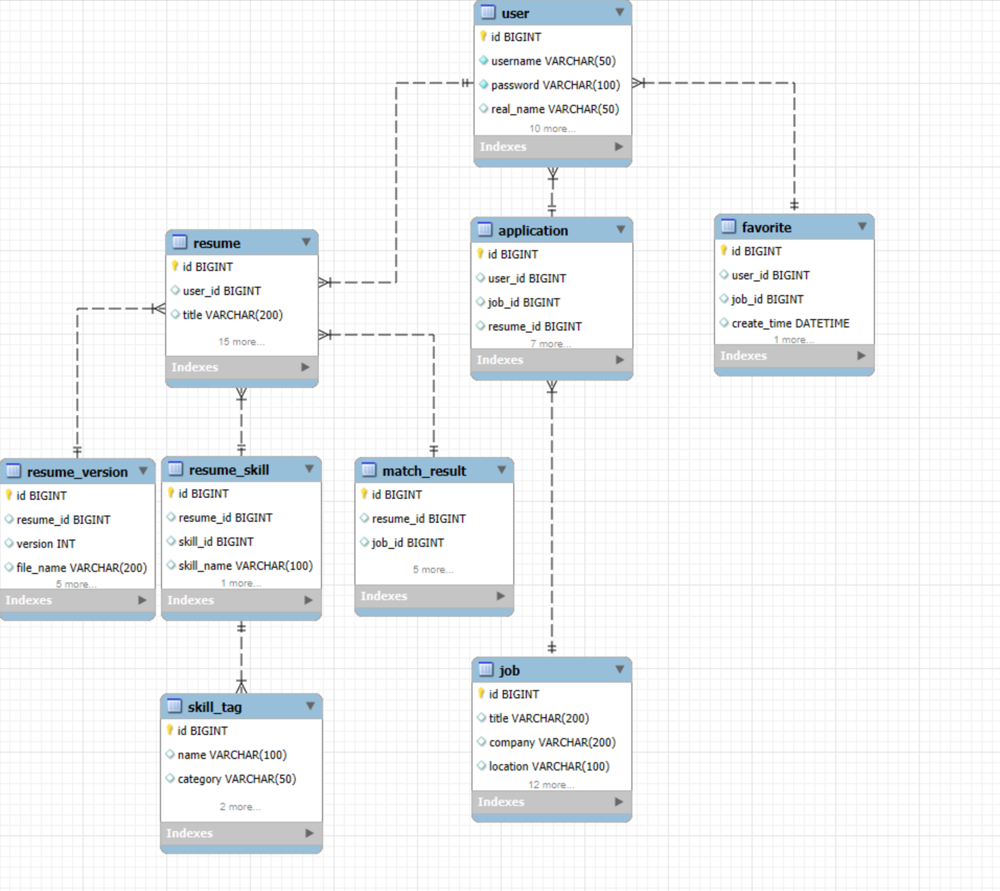
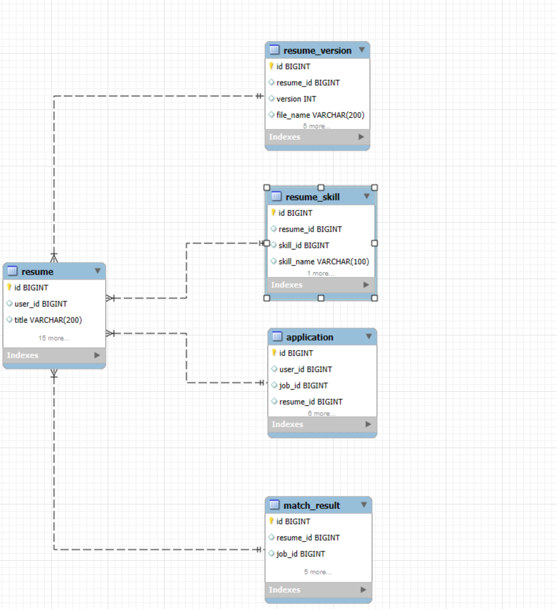
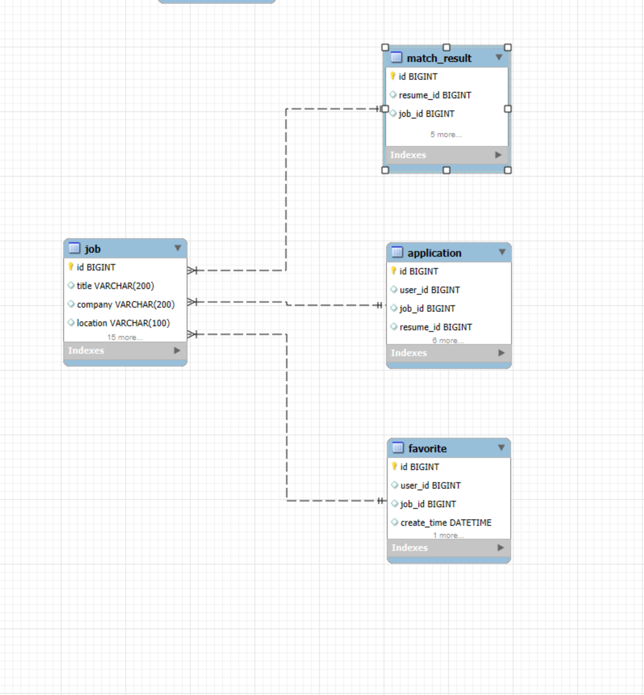

01 / BACKEND · AI
ResumeMatch
简历智能匹配系统
项目角色
后端开发｜数据库开发
11
业务数据表
20+
REST API
AI
人岗匹配
0.5%
业务数据出错率





项目概述
基于 SpringBoot 构建的招聘业务管理系统， 围绕用户、简历、岗位、投递等核心业务进行后端开发。 结合 DeepSeek API 实现智能简历优化与岗位匹配功能， 完成招聘业务流程的信息化管理。
主要工作
- 负责系统后端业务开发，基于 SpringBoot 搭建 RESTful API 服务， 实现用户、简历、岗位、投递等核心业务模块。
- 负责 MySQL 数据库设计，根据业务流程完成用户、简历、 岗位、投递记录等 11 张业务数据表设计，并优化数据关联关系。
- 使用 MyBatis-Plus 完成数据持久化开发， 实现 CRUD 操作以及业务数据管理。
- 接入 DeepSeek API，实现简历智能优化和岗位匹配分析功能， 完成第三方 AI 服务与业务系统集成。
- 使用 Postman 进行接口调试， 验证接口功能并定位处理异常问题。